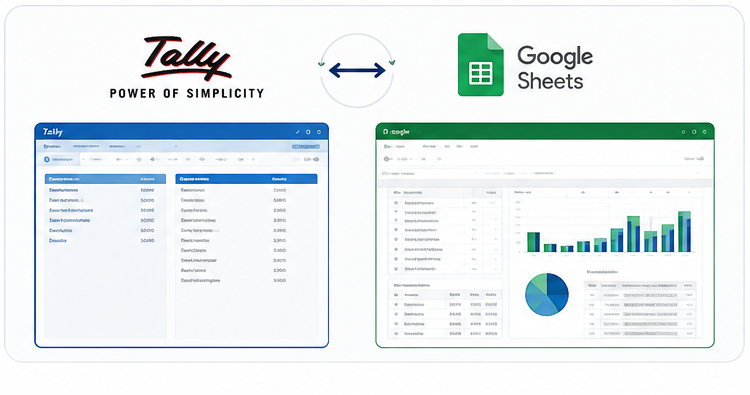
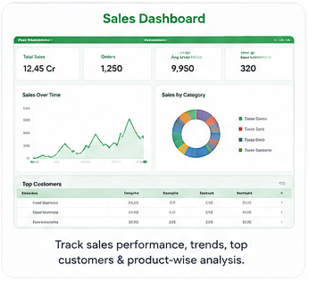
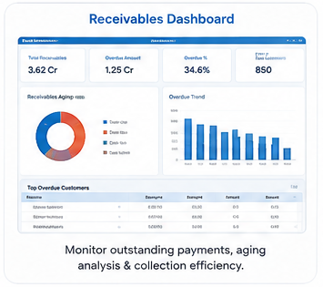
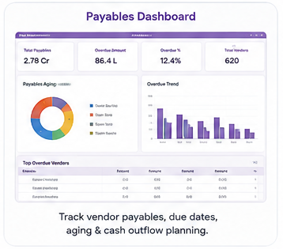
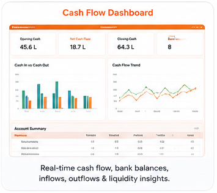

Before
Reporting depends on manual effort
- Repeated Tally exports
- Copy-paste into multiple sheets
- Formula errors and stale versions
- Delayed receivable/payable visibility
- Management asks for the same report again
FinSyncora builds practical business automation across Tally, Google Sheets, dashboards, email follow-ups, websites, and customized TDLs — so teams spend less time moving data and more time using it.

Manual finance reporting often means repeated exports, formulas, follow-ups, and version confusion. The goal is to create one reliable flow from accounting data to the people who need the insight.
Select a service below to see what it does, why it matters, and the business value it can create.
Transform your accounting workflow by automatically syncing financial data into flexible, collaborative Google Sheets — with bi-directional capability where required.
Accounting data locked inside desktop workflows can slow decision-making. A cloud reporting layer gives sales, operations, and finance teams faster access to current numbers without giving everyone direct access to the main Tally application.
Turn raw transactional data into interactive visual insights that help management identify trends, risks, and priorities faster.
Long tabular reports can hide trends and warning signs. Dynamic dashboards translate complex financial and operational metrics into clear visual patterns that are easier to review during day-to-day decisions and management meetings.
Automate order updates and outstanding follow-ups so routine communication happens consistently without depending on manual reminders.
Manual follow-ups consume administrative time and are easy to miss during busy periods. Automated notifications create a consistent communication rhythm for collections and order tracking.
Establish a fast, modern, professional web presence designed to explain your offering clearly and capture incoming enquiries.
Your website is often the first place a potential customer evaluates the business. A clear, structured web presence helps communicate credibility, services, proof, and the next action to take.
Tailor Tally Prime around your operational requirements with custom modules, entry controls, validations, and specialized business reports.
Standard Tally configurations do not always match the exact processes of manufacturing, trading, or service businesses. TDL customization can adapt Tally around operational workflows instead of forcing teams into repeated manual workarounds.
These are visual concept images only. Your final dashboards can use your own Tally data, KPIs, company names, filters, and reporting formats.




Preview images are illustrative concepts and are not live dashboards or client data.
Start with the reports you need now, then expand the same automation layer as your reporting requirements grow.
This simple calculator is only an estimate. It helps quantify repetitive work before deciding what is worth automating first.
The live Apps Script links have been removed. Visitors now see polished preview images that demonstrate the style and type of reporting you can build.
Understand the current process, systems, data sources, users, pain points, controls, and expected output.
Define fields, workflow logic, validations, triggers, access rules, reporting needs, and success criteria.
Build on sample or controlled data, test edge cases, validate output, and refine the solution with user feedback.
Deploy the working solution with basic documentation, operating guidance, and a clear handover for day-to-day use.
FinSyncora is led by Priya L. Salve, a finance professional with experience in financial analysis, accounting, reporting, budgeting, reconciliations, and Tally-based workflows. That finance context helps shape solutions around how business teams actually work — not only around the technology.
The working toolkit spans Tally Prime / ERP, TDL, Excel, Google Sheets, Apps Script, Power BI, Tableau, SQL, Python, finance analytics, email automation, and front-end web solutions.
Yes. A solution can pull data from Tally into Google Sheets and, where your workflow requires it, prepare validated Sheet inputs for Tally posting.
Refresh can be designed as scheduled, on-demand, or based on the deployment method and environment available for your Tally setup.
Yes. Existing formats can be mapped where practical, or redesigned when a cleaner data structure would make the automation more reliable.
No. Google Sheets can be the reporting layer, or the data can support Power BI / Tableau-style dashboard workflows depending on the requirement.
Yes. Reminder workflows can be designed around due dates, ledger balances, invoice data, order status, and reusable email templates.
Customized TDL work can add fields, controls, entry behavior, approval logic, and specialized reports depending on the requirement.
Yes. FinSyncora can build responsive service websites with lead capture, enquiry forms, integrations, SEO-ready structure, and GitHub Pages or similar static deployment options.
Share your current Tally workflow, spreadsheet, dashboard, follow-up process, website requirement, or TDL need. FinSyncora can help convert it into a practical solution scope.
↗ Workplace132000@gmail.com